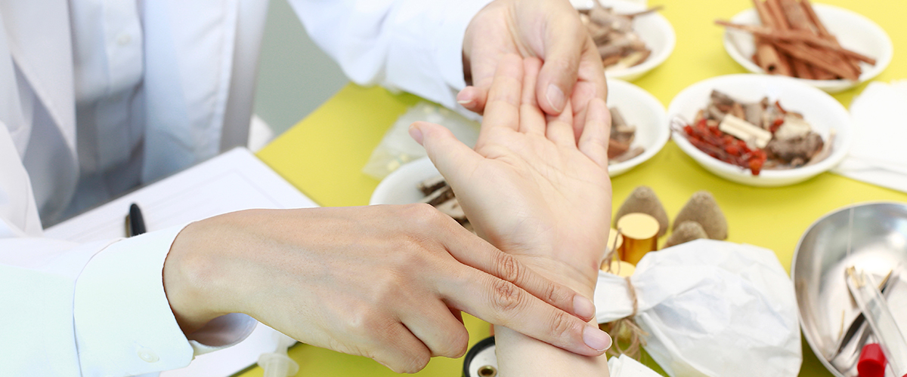

교통사고 후유증 & 치료
SONAMU KOREAN MEDICAL CLINIC
- HOME
- 교통사고 후유증 & 치료
교통사고 후유증 & 치료
-
교통사고 후유증 & 치료
- 사고 당시에 아무런 증상이 없어
더욱 무서운 질환 교통사고 후유증 -
교통사고 후유증은 지금 당장 문제가 발생하지 않지만 시간이 점차 흘러 발생하는 경우가 많습니다. 사고 났을 때의 이상 소견이 없더라도 근육 긴장 및 경직, 기혈순환의 문제가 나타날 수 있는 만큼 즉시 치료받아 후유증을 예방해야 합니다.
- 증상
-
- 1. 이명, 두통
- 2. 손발 저림 현상
- 3. 염좌 및 전신 근육통
- 4. 식욕저하, 소화불량 등
- 5. 불안, 무기력증 등
- 사고 당시에 아무런 증상이 없어
-
교통사고 후유증 치료
- 경미한 증상도 적절한 시기를 놓치면 합병증을 유발하기도!
-

교통사고 후유증은 몸의 전체적인 통증을 동반하게 됩니다.
신체적 충격과 함께 정신적인 손상이 동반되며 초기에 치료받을 시에는
보다 만족스러운 결과를 얻기도 합니다.
하지만 방치하게 된다면 만성통증으로 발병할 수 있기에 조기에
치료받는 것을 권장드리고 있습니다.
- 치료
-
- 자동차보험 처리는 사고접수번호와
보험 담당자 연락처만 알면, 접수는 어렵지 않기에
오직 건강회복에만 집중할 수 있습니다.
스스로 인지하기 어려운 작은 상처부터 X-RAY 등 영상 진단을 통해서
발견하기 어려운 어혈까지 한방학적 측면에서 진단하고 치료합니다.
- 자동차보험 처리는 사고접수번호와